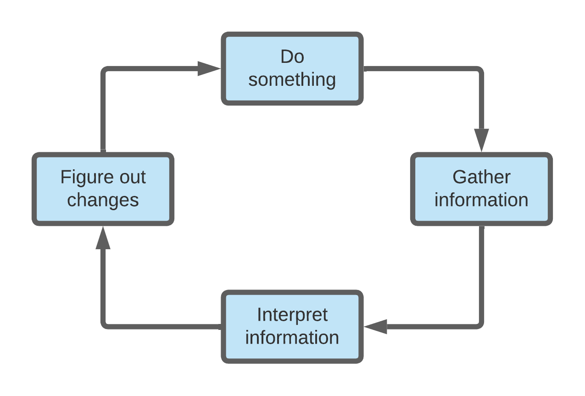
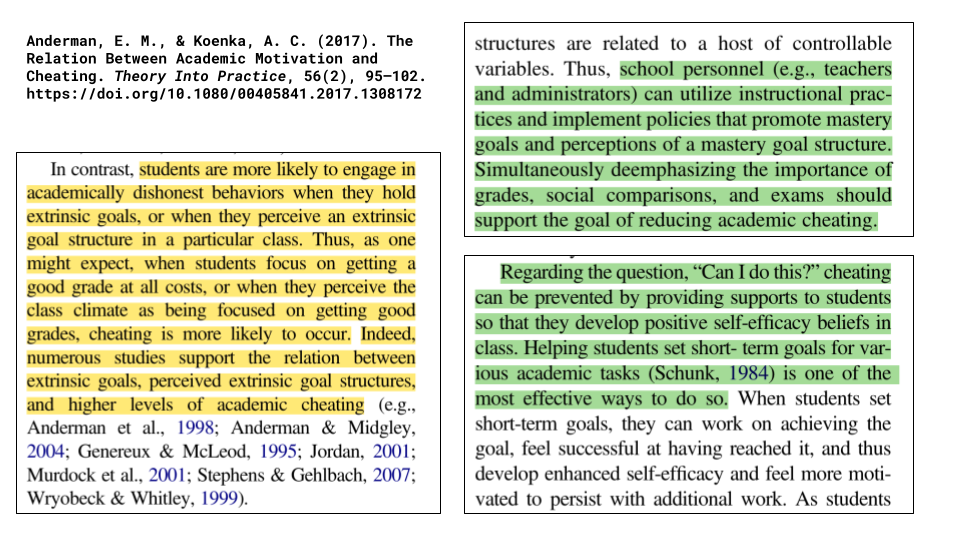

Grading For Growth
Robert Talbert, Ph.D.
Grand Valley State University
talbertr@gvsu.edu | @RobertTalbert | rtalbert.orgResource page

Something is deeply wrong with the way we grade
And it's not you or your students
Traditional grading is broken.
It might not be fixable.
But it is replaceable.
And now is the time.
Traditional grading is broken. It might not be fixable. But it is replaceable, and now is the time.
OUR AGENDA:
What is traditional grading?
How is it broken?
How might we replace it?
Questions
What do we think/hope traditional grading accomplishes?

Traditional grading is...
An invention of administrators and faculty meetings
Designed to solve administrative problems
A product of early-20th century industrial ideas
Not inherently part of higher education
Not the result of research or mindful practice
How all significant learning works:

Traditional grading lacks construct validity
Course grade = average of three exam scores, 100 max. What is each student's final grade?| Exam 1 | Exam 2 | Exam 3 | Total | |
| Alice | 0 | 80 | 100 | 180 |
| Bob | 60 | 60 | 60 | 180 |
Traditional grading lacks statistical meaning
Traditional numerical grades != numerical dataTraditional grading is demotivating
Traditional grading is broken. It might not be fixable.
But it is replaceable.